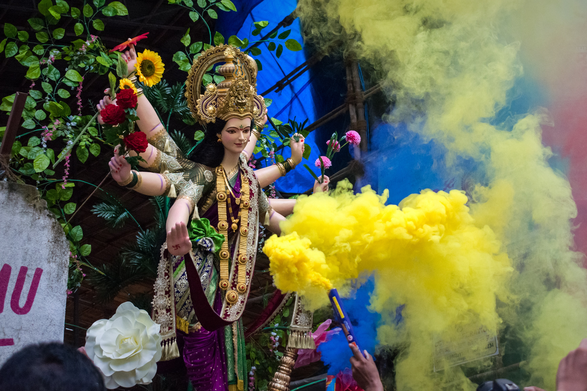
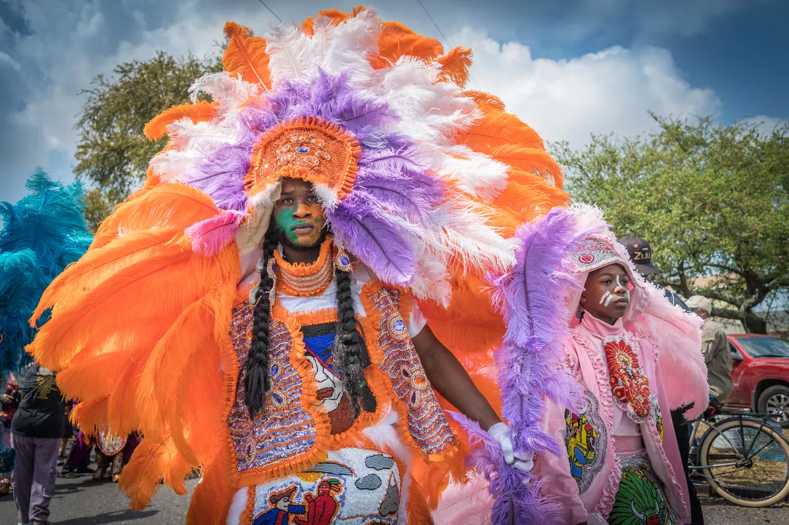
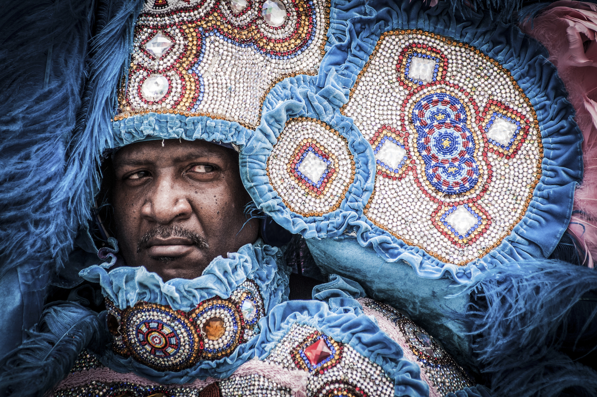
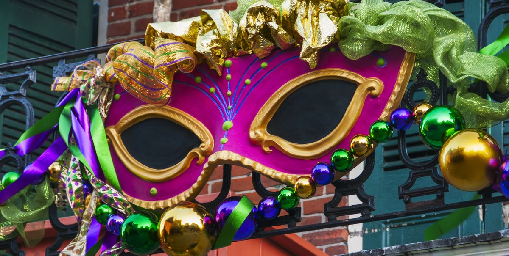

Our History - Larger Than Life!
The origins of Mardi Gras can be traced to medieval Europe, passing through Rome and Venice in the 17th and 18th centuries to the French House of the Bourbons. From here, the traditional revelry of "Boeuf Gras," or fatted calf, followed France to her colonies.
On March 2, 1699, French-Canadian explorer Jean Baptiste Le Moyne Sieur de Bienville arrived at a plot of ground 60 miles directly south of New Orleans, and named it "Pointe du Mardi Gras" when his men realized it was the eve of the festive holiday. Bienville also established "Fort Louis de la Louisiane" (which is now Mobile) in 1702. In 1703, the tiny settlement of Fort Louis de la Mobile celebrated America's very first Mardi Gras.
New Orleans was established in 1718 by Bienville. By the 1730s, Mardi Gras was celebrated openly in New Orleans, but not with the parades we know today. In the early 1740s, Louisiana's governor, the Marquis de Vaudreuil, established elegant society balls, which became the model for the New Orleans Mardi Gras balls of today.
The earliest reference to Mardi Gras "Carnival" appears in a 1781 report to the Spanish colonial governing body. That year, the Perseverance Benevolent & Mutual Aid Association was the first of hundreds of clubs and carnival organizations formed in New Orleans.
By the late 1830s, New Orleans held street processions of maskers with carriages and horseback riders to celebrate Mardi Gras. Dazzling gaslight torches, or "flambeaux," lit the way for the krewe's members and lent each event an exciting air of romance and festivity. In 1856, six young Mobile natives formed the Mistick Krewe of Comus, invoking John Milton's hero Comus to represent their organization. Comus brought magic and mystery to New Orleans with dazzling floats (known as tableaux cars) and masked balls. Krewe members remained anonymous.

In 1870, Mardi Gras' second Krewe, the Twelfth Night Revelers, was formed. This is also the first recorded account of Mardi Gras "throws."
Newspapers began to announce Mardi Gras events in advance, and they even printed "Carnival Edition" lithographs of parades' fantastic float designs (after they rolled, of course - themes and floats were always carefully guarded before the procession). At first, these reproductions were small, and details could not be clearly seen. But beginning in 1886 with Proteus' parade "Visions of Other Worlds," these chromolithographs could be produced in full, saturated color, doing justice to the float and costume designs of Carlotta Bonnecase, Charles Briton and B.A. Wikstrom. Each of these designers' work was brought to life by talented Parisian paper-mache' artist Georges Soulie', who for 40 years was responsible for creating all of Carnival's floats and processional outfits.
Female Krewes - No More Bro Show

For most of its illustrious history, Mardi Gras in New Orleans was a bro show. While women participated behind the scenes, all-male krewes meant just that – no women allowed. Then, when Carnival celebrations merged with the debutante season in the city, women began to play a more prominent role as queens and Mardi Gras courts.
Still, it wasn’t enough just to be arm candy. It wasn’t long before women wanted their own organizations and, in 1922, the Krewe of Iris was formed. While Iris became the first organization to have their tableaux ball televised, they didn’t parade until 1959.
The First All-Female Parade
In 1941, The Krewe of Venus became the first all-female parade but it wasn’t all glitter and sequins. First of all, it rained. Second, some men along the parade route threw rotten vegetables at the riders. Despite all that, the women had a great time and when Mardi Gras resumed again after World War II, Venus was there.
From the 1960s on, Venus and Iris were joined by several all-women krewes, including Helios and Diana in Metairie, Isis in Kenner, Pandora in Gentilly, Cleopatra (West Bank) and Eve in Mandeville.
Female Superkrewes
In 2000, women not affiliated with the existing female krewes formed the Krewe of Muses with an open-membership policy. Their numbers and popularity swelled almost overnight. Today, they are 1,500 members strong and are known for their signature throw – the hand-decorated Muses shoe – one of those valuable treasures of Mardi Gras. They were also the first female krewe to parade Uptown at night.
The Krewe of Muses was so popular that a spin-off krewe, The Mystic Krewe of Nyx, was formed to take the pressure off Muses' waiting list. Today, the Krewe of Nyx has more than 1,200 numbers and a waiting list of its own. They throw purses – another coveted throw.
Our Major - LaToya Cantrell

LaToya Cantrell (born April 3, 1972) is an American politician serving as the Mayor of New Orleans, Louisiana, a post she has held since May 7, 2018.
Mayor of New Orleans
Cantrell was inaugurated as mayor on May 7, 2018, the first woman to hold the position in the city's history. Once in office, she established a new Office of Youth and Families, with the goal of creating a strategic plan to address families in crisis in the city. Cantrell also founded a Gun Violence Reduction Council, tasked with finding solutions to violent crime. Starting with a push to rededicate hotel taxes collected within the city for city use, Cantrell has focused on her #fairshare initiative to improve city infrastructure, public transportation, public parks, and green spaces. As part of that initiative, in October 2018 the City of New Orleans filed a lawsuit against four opioid manufacturers and distributors.
During the 2019 session of the Louisiana Legislature, Cantrell negotiated the Fair Share Agreement with Governor John Bel Edwards and city, state, and tourism officials. The agreement secured $50 million in upfront funding for the city's infrastructure needs as well as $26 million in annual recurring revenue for the city. Following the approval of the Fair Share Agreement, New Orleans voters approved 3 of the 4 proposals Mayor Cantrell and the City Council put on the ballot in the 2019 general election. Voters approved a $500 million bond sale and a tax on short-term rental properties, as well the establishment of a Human Right Commission under the New Orleans Home Rule Charter.
Indians - Discover History
"Mardi Gras Indians are secretive because only certain people participated in masking--people with questionable character. In the old day, the Indians were violent. Indians would meet on Mardi Gras; it was a day to settle scores." - Larry Bannock, Past President, New Orleans Mardi Gras Indian Council
Mardi Gras is full of secrets, and the Mardi Gras Indians are as much a part of that secrecy as any other carnival organization. Their parade dates, times and routes are never published in advance, although they do tend to gather in the same areas every year.
The Mardi Gras Indians are comprised, in large part, of the African-American communities of New Orleans's inner city. While these Indians have paraded for well over a century, their parade is perhaps the least recognized Mardi Gras tradition.
"Mardi Gras Indians--the parade most white people don't see. The ceremonial procession is loose, the parade is not scheduled for a particular time or route...that is up to the Big Chief." - Larry Bannock
Traditional Mardi Gras organizations form a "krewe." A krewe often names their parade after a particular Roman or Greek mythological hero or god. The ranking structure of a Mardi Gras Krewe is a parody of royalty: King, Queen, Dukes, Knights and Captains, or some variation of that theme. Many of the more established krewes allow membership by invitation only.
Few in the ghetto felt they could ever participate in the typical New Orleans parade. Historically, slavery and racism were at the root of this cultural separation. The black neighborhoods in New Orleans gradually developed their own style of celebrating Mardi Gras. Their krewes are named for imaginary Indian tribes according to the streets of their ward or gang.
The Mardi Gras Indians named themselves after native Indians to pay them respect for their assistance in escaping the tyranny of slavery. It was often local Indians who accepted slaves into their society when they made a break for freedom. They have never forgotten this support.
Long ago, Mardi Gras was a violent day for many Mardi Gras Indians. It was a day often used to settle scores. The police were often unable to intervene due to the general confusion surrounding Mardi Gras events in the city, when the streets were crowded and everyone was masked. This kept many families away from the "parade," and created much worry and concern for a mothers whose children wanted to join the Indians.
"'I'm gonna mask that morning if it costs me my life!' That morning you pray and ask God to watch over you, cause everybody is bucking for number one." - Larry Bannock
Today when two Mardi Gras Indian tribes pass one another, you will see a living theater of art and culture. Each tribe's style and dress is on display in a friendly but competitive manner. They compare one another's art and craftsmanship.
Although there was a history of violence, many now choose to keep this celebration friendly. Each Big Chief will eventually stand back and, with a theatrical display of self-confidence, acknowledge the artistry and craftsmanship of the other chief's suit.
Mardi Gras - Traditions
Mardi Gras is about music, parades, picnics, floats and excitement. It's one big holiday in New Orleans!
Revelers know to wear costumes or at least dress in purple, green, and gold, and adorn themselves with long beads caught from the floats of previous parades. You'll see a lot of crazy costumes, kids with their families are everywhere, and both locals and visitors having a great time. Parade goers will sit on the ground, throw balls, play music, eat great food and watch the crowds walk by between parades. On Mardi Gras day, the majority of non-essential businesses are shut down because of the celebration.
Experienced revelers know to bring a large bag with them so they can haul away all the beads and trinkets they will catch from the parades!
Every year, we get a lot of questions about how it all begin, and how the traditions have changed. Click on the buttons below to find out the answers to some of the most frequently asked questions.
“Super Krewe” Balls
Some large parades produce an indoor extravaganza the night of their parade. While all balls are exciting events, Bacchus, Orpheus, and Endymion, the three “super krewes,” put on the best balls by far!
In Greek mythology, Bacchus is the god of wine and vegetation—and they host a celebration fitting of its namesake god. Mardi Gras balls were exclusive events closed off from most people outside of New Orleans society until this krewe revolutionized the event. In 1949, Edward Brennan Sr. created the krewe, a carnival Ball open to tourists. As they say, the first is the best because this event has become the talk of the town for tourists and locals alike!